光影之国：1978-1997
摘要：本文以1978至1997年为时间跨度，通过深入描绘中国东南方县城两个家庭在改革开放浪潮中的生活经历，尤其是他们与电影、电视等视觉媒体的接触历程，生动呈现了这一时期中国社会文化层面的深刻变革。作者选取1978、1985和1997三个关键...
摘要：本文以1978至1997年为时间跨度，通过深入描绘中国东南方县城两个家庭在改革开放浪潮中的生活经历，尤其是他们与电影、电视等视觉媒体的接触历程，生动呈现了这一时期中国社会文化层面的深刻变革。作者选取1978、1985和1997三个关键时间节点，将个体家庭的发展轨迹、邓小平同志的心路历程一瞥以及国家宏观政治生活相融合，展现了改革开放对中国人民日常生活的深远影响。在此基础上，综合运用电影理论与社会心理学理论，深入剖析改革开放在文化与意识形态领域的重要意义，深刻阐释视觉文化如何生动反映改革开放背景下的中国社会意识形态，以及如何积极助力社会的持续变革。
关键词：改革开放；视觉文化；社会变革；家庭记忆；电影批判
1978
我最早看电影应该1975年、1976年样子，看的都是战争片，具体片名就不记得了，最早看电视也差不多那时候，看的是武打片，省(如)《再向虎山行》，《霍元甲》等。牧马人，少林寺，神秘的大佛等比较典型。武当，木棉袈裟等武打片。那时候看电影有在电影院看，也有在露天看。1
1978年5月11日，《光明日报》于头版刊载了特约评论员的《实践是检验真理的唯一标准》一文，此文章在全国范围内掀起了一场关于真理标准问题的热烈讨论。由此，中国社会的意识形态领域开始发生转变，民众的观点渐趋多元[1]。同年11月，安徽省凤阳县小岗村推行”分田到户，自负盈亏”的家庭联产承包责任制（大包干），这一举措拉开了中国国内改革的大幕。在城市中，国营企业的自主经营权亦有显著提升。此外，1978 年中国恢复了高考制度[2]。
1977年到1981年，我的外公则经常与我的小姨出现在电影院里。那时，在江西省的武宁小县城中，便已有一个室内电影院和一个露天电影院，不过人们只能用一根根长木头当凳子。他们观看的电影有《洪湖赤卫队》、《永不消失的电波》、《黑三角》、《闪闪红星》等红色电影。小姨那时年龄尚小，观影时总是以好人和坏人来区分影片人物，当时所看影片大多为打仗题材，在她眼中，解放军、红军是好人，国民党、日寇、间谍则为坏人，参过军的外公会适时提示她如何分辨。我的母亲刚刚出生。
而在小小的武宁县的甚至更偏远的一个角落，早在75或者76年，我的父亲已经在大桥乡观看一些已经回想不起名字的战争片。82年，乡下就有了一台电视机，他还记得电视上的《再向虎山行》、《霍元甲》。
改革开放的最初的日子，在江西的一个小县城里，当时年轻的上一辈人正在思考什么是改革开放，他们的父母 - 我们的祖辈 - 也在思考什么是改革开放，从某种意义上，这个民族也在思考什么是改革开放。
国营工业企业利润留成1980年开始实行，在工厂工作的外婆和为政府开公交车的外公都是受益者。我的父亲需要考上大学，从而获得一份不用待在田里的工作。大姨、小姨、母亲需要通过高考获得一份编制。这就是他们的改革开放初期。在这段日子里，所有人都在孕育一个梦想。也许对我的父辈来说，他们的梦与改革开放之前的梦没有什么不同 - 在一个小小的县城，生活会慢一个节拍。但是世界的确在向他们走来，进入他们的那一片天地，在漫不经心间世界也终会到来。
1978年9月17日，邓小平的专列抵达沈阳，在友谊宾馆听取了辽宁省委的工作汇报。汇报结束后他说，马克思主义就是这样，归根到底要发展生产力。我们太穷了，太落后了，老实说对不起人民。我们的人民太好了[3]。但是人民并不悲伤，中国的人民始终在努力地使用他们拥有的资源与条件，来获得最好的产出。他们也许疲惫，但他们没有活在过去。感到悲伤的是我们的领导人，他们在一段时间内所体会到的是一种迷茫与失望，而这种感受产生于他们对人民深切的爱。
一场高烧之后，我们的民族也在开始孕育一个梦想，它开始活在一种可能性中，而我们的民族从未如此地诚恳过，从未与它的孩子们如此地相似过。于是就在梦的逐渐成熟中，一代人长大，一代人变老。就这样怀着一种新的意识心态，我们的民族正在褪去一层尘灰遍布的壳。
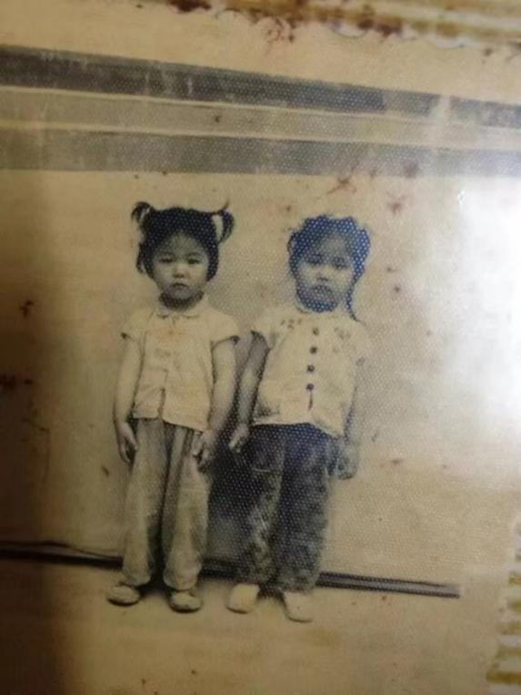
小姨与大姨（于1974拍摄，左小姨，右大姨）
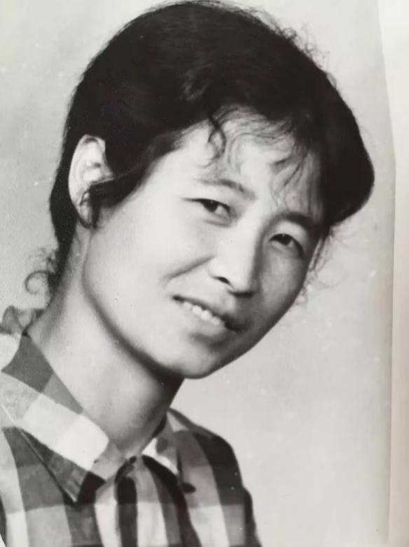
外婆（据回忆于1982或1983年拍摄）
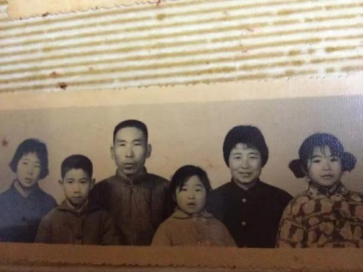
母亲全家福（据回忆于80年代拍摄，从左至右：大姨、舅舅、外公、母亲、外婆、小姨）
1985
84年爷爷（指外公）养三头大黑猪，用其中两头买了一台20英寸的黑白电视机（当时整个武宁县就只有2台这么大的，另外一台被单位买去啦），夏天晚上就摆在屋前地坪上，整排房子的邻居都到我们家看电视（他们家都没有电视），那时没有高楼大厦，只有一排一排的平房，而且大多是土坯房，砖房不多，不过土坯房住起来冬暖夏凉，一家7、8口就窝在20多平的房子里。
1984年10月20日，中国共产党十二届三中全会在北京举行。会议一致通过《中共中央关于经济体制改革的决定》，明确提出:进一步贯彻执行对内搞活经济、对外实行开放的方针，加快以城市为重点的整个经济体制改革的步伐，是当前我国形势发展的迫切需要[4]。1986年12月5日，国务院作出《关于深化企业改革增强企业活力的若干规定》。《规定》了扩大企业经营自主权，促进企业内部机制改革。在两个重要经济文件发布的中间，1985年，教育体制改革拉开帷幕[5]，价格改革起步[6]，义务教育在次年开始实行[7]。
我的父亲高中在老一中读书时，星期六晚上到附近一个厂电影院去看电影。那时候县城的电影院已经不是长木头凳子了。《少林寺》，《红高粱》。有在电影院放的，还是政府送电影下乡的，还有家里办喜事请人来家里放的。
大姨和小姨，后来看的少了，没太多时间，直到大学期间，周末都会去电影院看电影。80年代读初中的时候，她们班上流行琼瑶的言情小说和梁羽生、金庸的武侠小说。在改革开放刚刚起步之际，“琼瑶热”如同潮水一般，跨越台湾海峡，席卷至大陆。彼时，大陆的作家群体中鲜有人投身于通俗文学的创作领域，相应地，大陆读者对于通俗文学也颇为陌生。而随着市场经济的蓬勃兴起，大众文化的发展空间不断拓展。在这样的背景下，人们不满足于伤痕文学、改革文学、先锋文学等严肃文学，内心渴望在其之外，能够阅读到风格更为轻松的文学作品，进而探寻另一种可能的生活模式[8]。
我的母亲，则成为了外公带去看电影的对象。少林寺，庐山恋。我的母亲在小的时候就和长辈一起看了中国荧幕史上的第一吻。她也许是真正地在改革开放下长大的一代人，就像我们戏称我们自己为第一代完全在社交媒体影响下成长起来的一代。
从这个时候开始，他们的生活开始在一个充满可能性的平面展开。也许改革对他们来说从来都不是浪潮，而是涓滴，只有回首往事才能够意识到自己已经走过了多远。一种新的连接在产生，在他们与他们身边的人上。
1986年9月2日，邓小平亲切地回答美国记者迈克·华莱士对中国现状的询问。他说，我们也讲现在我们搞的实质上是一场革命。从另一个意义来说，我们现在做的事都是一个试验。对我们来说，都是新事物，所以要摸索前进[9]。中国人民熟悉的共产党，在利用这个机会，重新地经历生命的成长。不断前进与进步，当世界再次遇见它，将是崭新的一股力量。
中国与世界建立了新的联系，在外国人眼中，中国不再仅仅是意识形态的输出地，而开始被视为一个现代化的国家，展现出理性的思考和为自己争取机会的奋斗精神，仿佛在一场高烧之后恢复了其内在的力量。它有了自己的叙事，并且允许他人来解读，而不是在自说自话自己的历史。20世纪的末期，中国以外的整个世界都在一种闷热下奔跑向前，而中国则是在清风徐徐下奔跑。这不是指中国在改革开放的道路上没有什么阻碍，而是指中国当时已经有很长一段时间内都缺乏快速而显著的实体经济发展，这反而使得我们避免了一种倦态，拥有了一丝勇往直前的无畏。
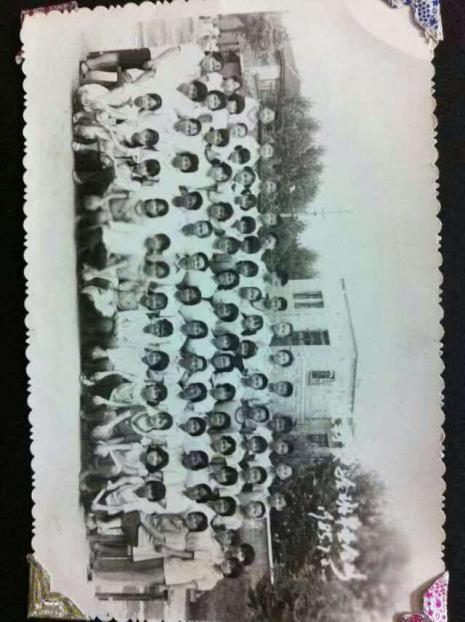
母亲小学毕业照（于1984年拍摄）
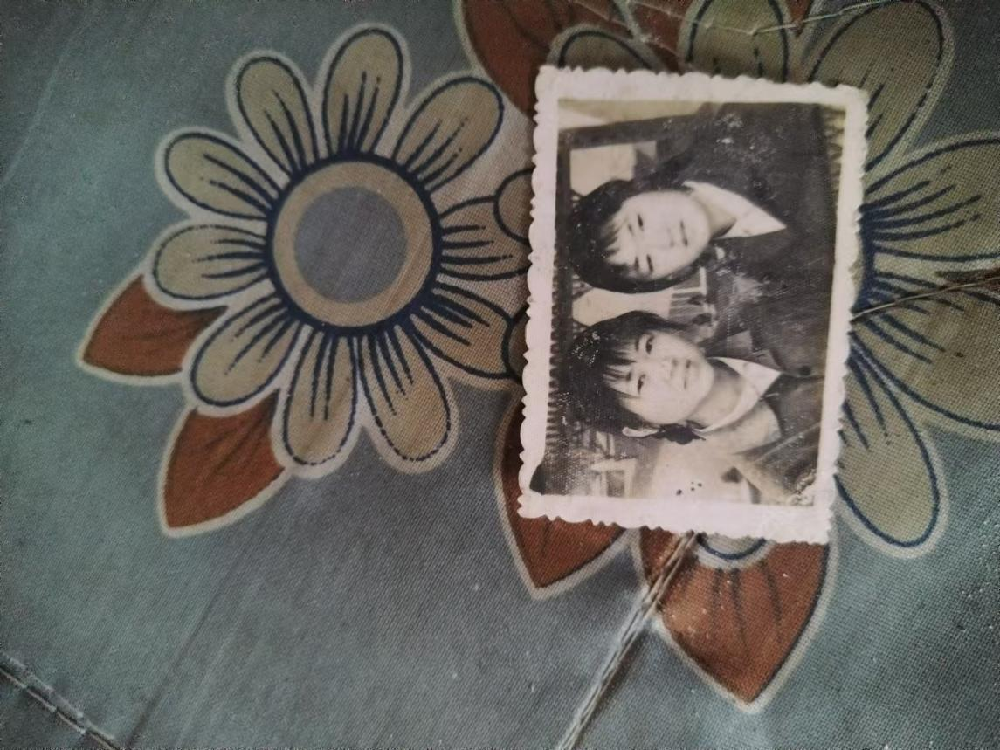
二姑和同学（于1986年拍摄）
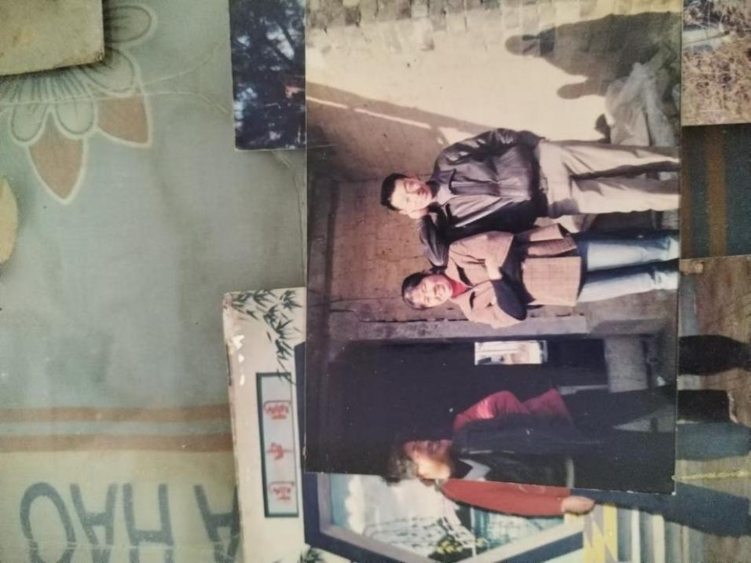
小姑和小姑父（于1986年拍摄）
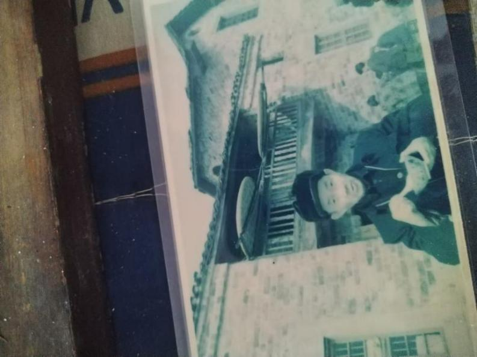
太爷爷（1986至1990年拍摄）
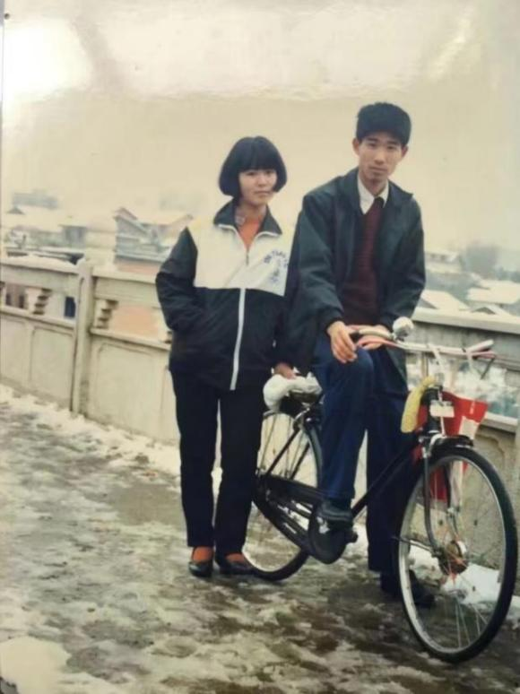
小姨与舅舅（于1987年拍摄）
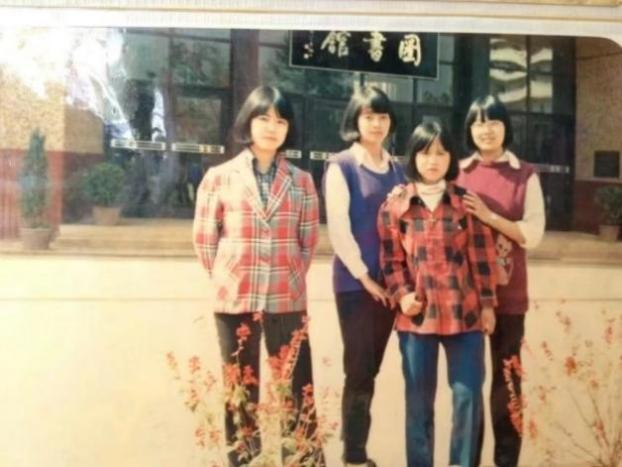
小姨在大学（于1988年拍摄）
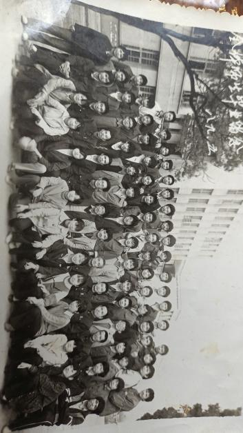
父亲在大学（于1989年拍摄）
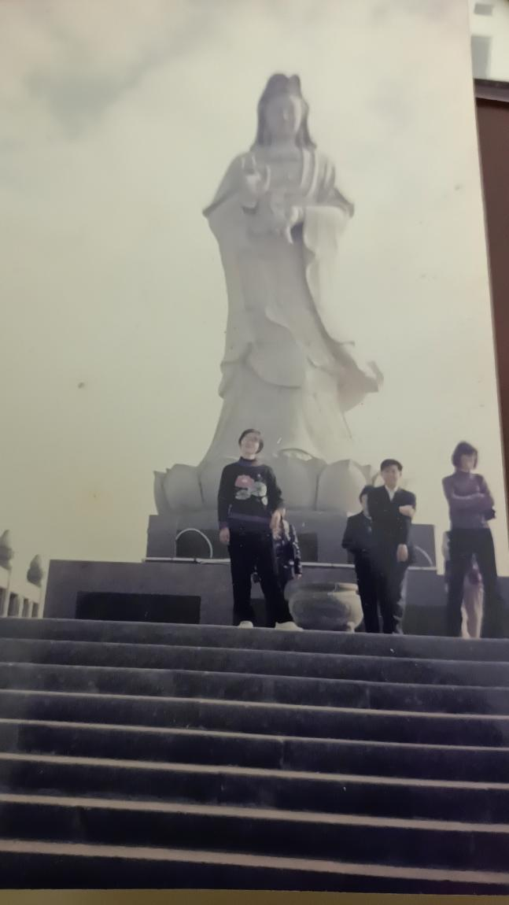
母亲（图中间）在观音岛（于1990年拍摄）
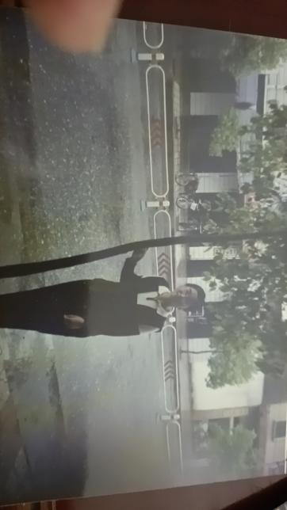
母亲（于1990年拍摄）
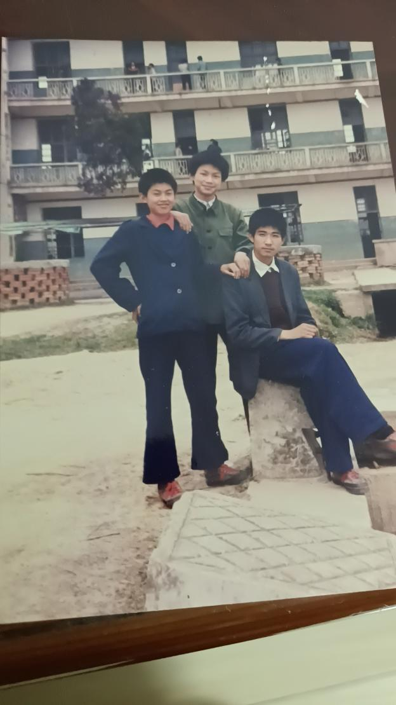
舅舅与同学（于1990年拍摄）
1997
你有没有在鞋店工作时的照片,或者那段时间的。自己的，或者和朋友一起的。
没有哟。那个年代不怎么照相，又没有手机。
1997年6月30日午夜至7月1日凌晨，中英两国政府在香港会议展览中心新翼的五楼大会堂举行了香港政权交接仪式[10]。自 1997 年 7 月起，周边诸多国家货币大幅贬值，给人民币带来了极大压力。我国政府承诺维持人民币不贬值，全力确保人民币汇率的稳定。凭借此前实施的一系列防范金融风险举措，我国成功抵御了此次金融危机，未遭受直接冲击，有力地保障了国家金融与经济的持续稳定发展[11]。
一个新的世纪即将到来。我的父亲在电影院里看《纵横四海》，还有周润发演的一些枪战片，香港的枪战片比较多。《泰坦尼克号》，《真实的谎言》这种美国的大片也有了。也有一种形式是看录像，周润发演的《英雄本色》，周星驰的《逃学威龙》等，还是香港的枪战片多。
香港电影到来武宁是90年代的事情了。林青霞也差不多是90年代啦。后来小姨也窝家里看韩剧（用VCD放），在千禧年到来前后看过的韩剧有《冬日恋歌》、《蓝色生死恋》、《天国的阶梯》、《天桥风云》、《洛城生死恋》等，好多，她都不记得啦。我的母亲在九十年代迷上电视剧。《红楼梦》，《三国演义》，《水浒传》，《康熙王朝》等历史题材，生活剧有《渴望》，还有《济公》，《射雕英雄传》，《武松》等功夫片。
世界就这样叩响了大门，而我们却未曾感到惊讶。在江西的那座小城，一切都慢了一点，一切都披上一种玫瑰色的怀旧与从容之感，但是我们知道世界一直都在，我们也曾一瞥世界的模样。1996年，我的母亲在当时的电影院附近开了一家皮鞋店，没有当上一位老师。我的父亲大学顺利毕业，之后他会成为一位公务员，他和母亲表白是在一条小商业街上。
1997年2月19日邓小平同志去世。在邓小平病情最严重的时候，医护人员询问邓小平还有没有什么要对国家和人民交代的，他轻轻地回答：“该说的都说过了”[12]。
中国不再仅仅是我们的中国，它是世界的中国，在世界政局、世界贸易市场中都占据着重要的位置。世界也在进入我们的国家，1997年香港回归，我们正在从现实意义上从近现代的历史中走出来。而在接下来的那些日子里，在倪萍与赵忠祥的贺岁声中，一个新的世纪开始了。我们虽略带迟疑，但始终满怀期待，坚定不移地迈向那些未被书写的岁月，如同二十年前整个中国向未来奋勇前行一般。
自改革开放以来，中华民族一直在思考的问题就是，世界的确在那里，那我应该做些什么？改革开放后，我们甚少感到恐惧，因为自70年代末起，我们已然明白，勤恳、真诚与理性始终是我们的有力护盾。世界依然在那里，所以我们应该做些什么？一种未被实践的生活是否值得实践？一个想象的世界在二维展开，其中是一个光影之国。
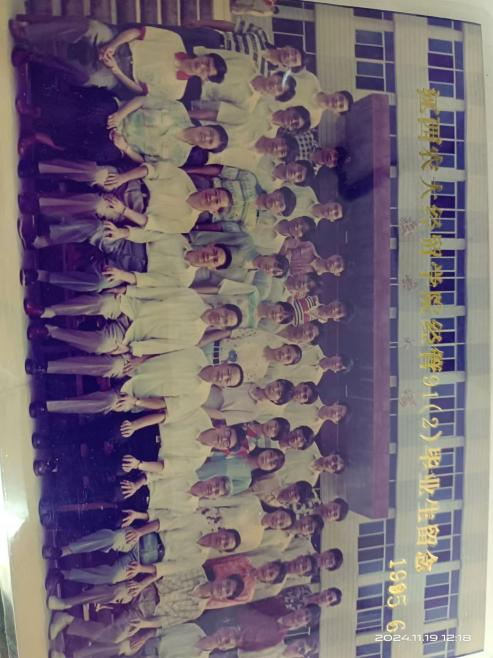
父亲大学毕业（于1991年拍摄）
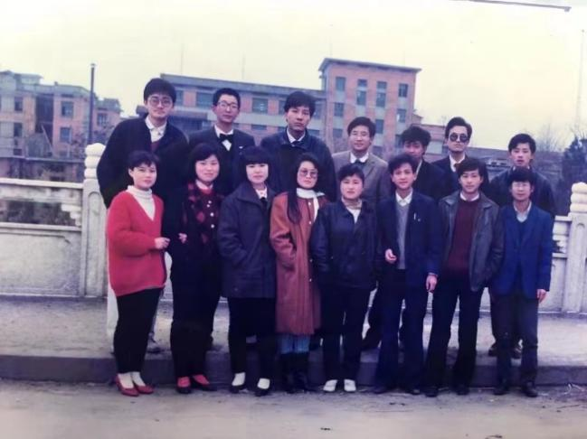
小姨与大学同学（于1991年拍摄）
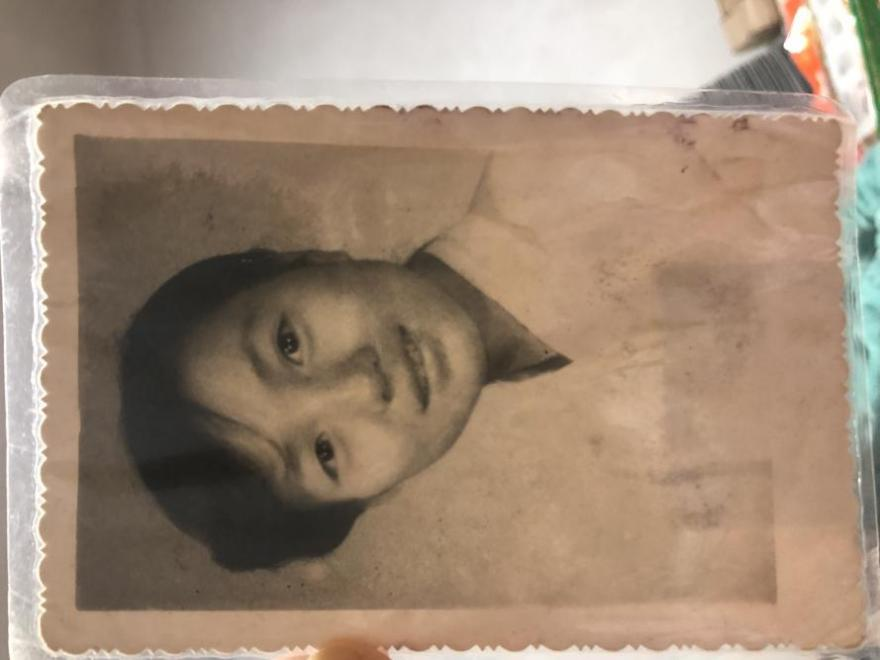
母亲朋友（于1992年拍摄）
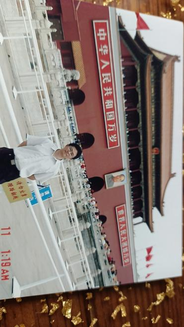
父亲在北京（于90年代拍摄）
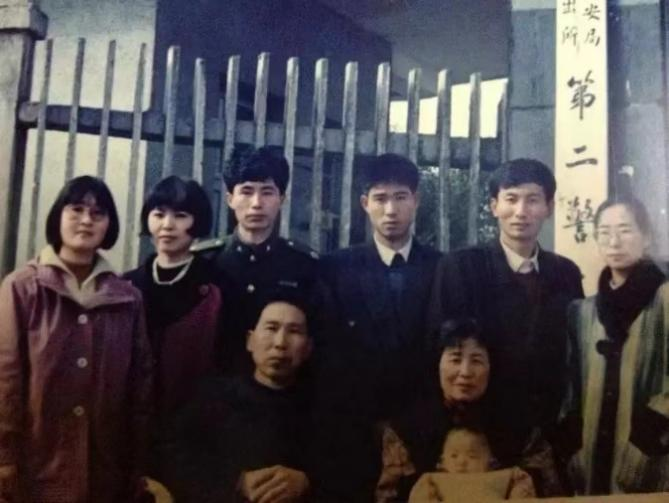
母亲全家福
（1994，后排从左至右：母亲、小姨、小姨爹、舅舅、大姨爹、大姨，前排左为外公，右为外婆）
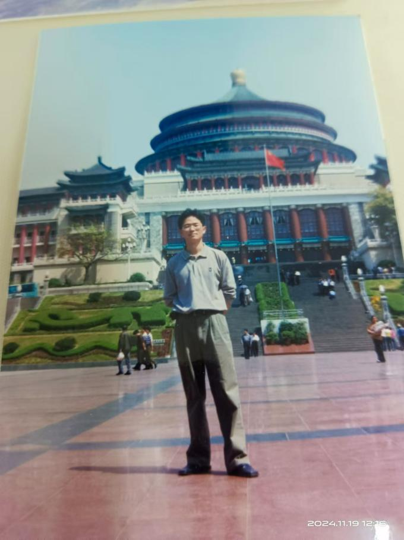
父亲（96年-20年代初拍摄）
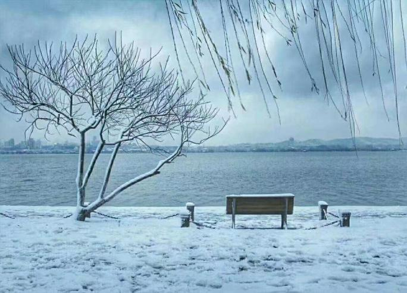
江西武宁1998年大雪
2024
电影是一种对于自由的实践[13]，一种对未经检验的生活方式的检验。这让我联想到邓小平同志回答美国记者时对”实践”这个词的使用。中国的改革开放，本质上是对固有事物的批判性审视，在批判之后，我们以满腔热忱的探索精神和持之以恒的奋斗努力，去践行那用无数艰辛换来的自由。一个人若想将电影作为理解生活的有效工具，其自身必须达到足够成熟的心智状态，不然极有可能被电影反向塑造。同理，一个民族在展望未来可能性之时，必须坚守理性并拥有清晰的自我认知，否则便可能重蹈苏联的覆辙，从一个极端走向另一个极端。回顾历史，七十年代文革结束后的中国社会，确实经历了一段充满哀伤的时期。然而，难能可贵的是，整个社会并未丧失理性思考的能力，这恰是我们能够在改革开放道路上稳步前行的深层次社会心理学根基。彼时，以邓小平同志为代表的领导人所展现出的沉着冷静与卓越思考能力令人由衷钦佩。他们引领着全体民族，循序渐进地思索未来的种种可能，勇敢地放眼世界，积极探寻那个根本性的问题 - 世界在那里，我们应该做什么？
改革开放时期的领导人的沉着冷静来自于一种对历史记忆的深刻理解，对未来的希冀。中国在近代确实已经受过了许多的苦难，而中国确实也总是会站起来。伤疤累累，但是始终在呼吸。他们明白，在那个时间点我们需要的是前进，走得不好也没有关系，总有一条路能走出来。而中国人民亦不负众望，他们实践着一个二十一世纪许多西方国家已经忘记的道理 - 最终一个民族想要富强，还是来源于大家一起努力、奋斗，而不是情绪化地相互指责，或者沉醉在对旧日的悔恨与对未来的恐惧中。中国未来必然会遭遇挑战与困难，而我们所需的是秉持以解决问题为导向的理性思维、对民族坚韧品质的自信，以及代代传承的勤劳刻苦精神。
外公离世后，小姨撰写了一篇悼念短文。起初，我未曾仔细研读，直至近日重温，文中提及外公常带她观影的片段触动了我。在我当下的生活里，电影扮演着重要角色，是我用以审视生活的一种方式。我谨慎运用它，是因为愤世嫉俗绝非可行之举，至多只是周六夜晚的一种消遣方式。但是我的外公对电影竟然也有一种热爱，让我莫名地感受到一种力量，一种支持，一种认同 - 对于我的理念的认同。
在撰写本文的进程中，当我深入探寻父母及其他家人的过往经历时，内心涌起一种难以言喻的微妙感触。当他们以质朴无华、未经雕琢的言语向我传递那些零散破碎、不够精准的回忆时，我仿佛置身于一场与老友的倾心交谈之中。这种感受的奇妙之处在于，尽管记忆如同现代生活般琐碎零散，但有一种力量将这些点滴串联起来，如同构成繁星闪烁的夜空，即便暗处仍不可见，我亦能感知美好。
一个国家如何讲述自己的故事，与我们如何回忆自己的人生，两者之间其实有着相似之处。当我们在学习国家的历史的时候，历史是非连续的。强烈的跳跃会使得我们忽视是那些细微的支流最后汇聚成了巨浪。当我们去了解那片黑暗时如何展开的时，我们更加理解了这个民族为什么最后可以走下去，而且越走越好。一个个小小的梦想，而不是强大的欲望；一点点小小的努力，而不是抢夺的霸道。往昔岁月看似漫长，不知如何消磨，回首方觉沧海桑田，已然换了人间。
鉴于民族是一个想象的共同体，其依存于回忆以及对回忆的叙述[14]。但是很少有学者提及，民族的未来在尚未到来时，也是一个想象的构造物，它和回忆一样存在不连续性与碎片性。我试图借由回忆重构对未来的想象，并以此反思当下。终于，我明白了回忆本身就是一种希望，未来本身就是一种重逢，对于一个民族 - 至少对于一个伟大的民族 - 来说，时间不是线性的，而是此刻的无限延伸。
记忆时而迸发，时而流淌，恰似对未来的想象那般时隐时现。我竭力使我的叙述能够传递出这种连续与断裂间微妙的美好，期望这如指尖漏出的阳光般的美好能被感知。
参考文献
[1]彭宁铃.国家记忆：《实践是检验真理的唯一标准》发表[EB/OL].(2024-1-25). 国家记忆：《实践是检验真理的唯一标准》发表 - 海外网 (haiwainet.cn)
[2]中国（海南）改革发展研究院.正式恢复高等学校招生统一考试制度[DB/OL].正式恢复高等学校招生统一考试制度_中国改革开放全纪录（1978-2018）_中国改革开放数据库 (reformdata.org)
[3]何伟志.邓小平的”北方谈话”[N]学习时报,2020-09-11.
[4]王莹.【百个瞬间说百年】1984，《中共中央关于经济体制改革的决定》[EB/OL]. 【百个瞬间说百年】1984，《中共中央关于经济体制改革的决定》_国内_新闻频道_云南网 (yunnan.cn)
[5]中国（海南）改革发展研究院.价格改革起步[DB/OL].价格改革起步_中国改革开放全纪录（1978-2018）_中国改革开放数据库 (reformdata.org)
[6]中国（海南）改革发展研究院.教育体制改革拉开帷幕[DB/OL].教育体制改革拉开帷幕_中国改革开放全纪录（1978-2018）_中国改革开放数据库 (reformdata.org)
[7]中国（海南）改革发展研究院.义务教育开始实行[DB/OL].义务教育开始实行_中国改革开放全纪录（1978-2018）_中国改革开放数据库 (reformdata.org)
[8]余夏.再话当年”琼瑶热”[N]光明日报,2019-06-11(10）.
[9]邓小平.邓小平文选 第三卷[M].北京：人民出版社,1993.
[10]中国（海南）改革发展研究院.香港回归[DB/OL].香港回归_中国改革开放全纪录（1978-2018）_中国改革开放数据库 (reformdata.org)
[11]中国（海南）改革发展研究院.应对亚洲金融危机[DB/OL].应对亚洲金融危机_中国改革开放全纪录（1978-2018）_中国改革开放数据库 (reformdata.org)
[12]凡闻.再道一声”小平，您好！“，邓小平逝世二十周年，我们该如何纪念他？[EB/OL].再道一声”小平，您好！“，邓小平逝世二十周年，我们该如何纪念他？ (huanqiu.com)
[13][美]狄安娜·泰勒,编.福柯：关键概念[M].庞弘，译.重庆：拜德雅丨重庆大学出版社,2020.
[14][美]本尼迪克特·安德森.想象的共同体:民族主义的起源与散布[M].吴叡人,译.上海：上海人民出版社,2013.
本文中的楷体字皆为真实话语引用，为保证真实性，保留原文。作者修订为括号中的宋体。↩︎